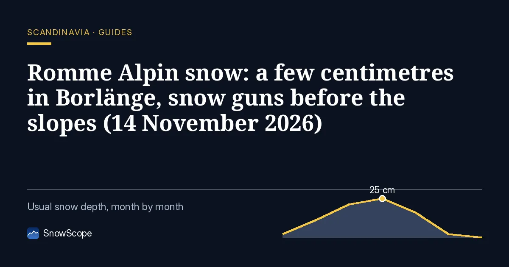
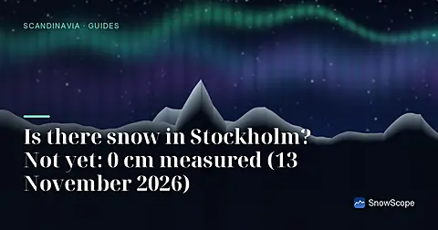

Romme Alpin snow: a few centimetres in Borlänge, snow guns before the slopes (14 November 2026)
Romme sits low, from 141 to 406 m near Borlänge, and relies on snowmaking to open. On 13 November, the region saw its first real snow of the season, but it landed unevenly and much of it will not survive this week's rain.
See the live snow forecast for Romme Alpin in the SnowScope appSnow depth, powder alerts and the 3D map, free.

Scattered snow, mostly melting
The first snow fell across the region on 12 and 13 November, but varied widely by location. Ludvika, 26 km west, recorded 10 cm; Bjursås north of Falun had 7 cm; Borlänge, the closest weather station at 12 km and 146 m elevation, measured 4 cm; Falun itself stayed dry. This patchiness is typical for early-season snow at low height: a few hundred metres of altitude, local wind and urban heat all affect what sticks.
In total, about 5 cm of new snow accumulated at the base over the past week and around 8 cm higher up. That is thin cover on bare ground, and forecasters expect it to vanish.

Rain replaces snow from today
The next seven days will bring almost no fresh snow to Romme. Instead, most water will fall as rain: about 85 per cent at the base and 70 per cent at the top. The snow line sits around 640 m, well above the resort's highest point. Any patchy cover left after rain will shrink or disappear.
This pattern is common for Romme in mid-November. Cold is rare; wet air from the Atlantic is not.
Winter's trend: less snow, more guns
Romme's past 46 winters show how little natural snow arrives early. The usual depth on 14 November is just 1 cm; by 30 November it rises to 6 cm; by mid-December, 10 cm. In four winters out of ten, the base has zero natural snow on 14 November. Eleven times in this 46-year span, the season's natural peak was 15 cm or less.
The longer trend is downward. The middle natural peak in the first 15 winters was 49 cm, but in the last 15 winters it dropped to 34 cm. Snow days fell from 136 to 97. This is why Romme cannot wait for nature. The resort's opening on 19 December depends on cold, dry nights for snowmaking, not on this week's weather.
What snowmaking needs
Snow guns work best when air is cold and humid, and the ground is not waterlogged. This week's rain will soak Romme's field. The mild spell forecast means few freezing nights. That can delay snowmaking work by several days or longer, pushing back opening.
Borlänge and Ludvika stations show that regional snow from weather systems melts fast in November. Only machine-made snow on the slopes survives the thaw.
What to expect by December
December is Romme's main snow month. The usual depth by 15 December is 10 cm, and snow falls on about 93 per cent of that month. By Christmas, the median depth reaches 13 cm, with snow on 90 per cent of days. That is still modest, but it is when natural cover typically arrives.
The resort's opening from 19 December relies on a mix: some natural December snow plus the artificial base laid down on cold nights now. If temperatures stay mild through December, opening could slip.
Tips for skiers
- Do not cross-country ski on the natural snow around Romme this week; it will melt or become patchy ice by 20 November.
- If you plan a first visit on 19 December, expect 100 per cent artificial snow and a narrow choice of runs until natural cover builds.
- Cold nights matter more than daytime temperature for snowmaking; track the overnight forecast closely in the two weeks before 19 December.
- Watch the resort's opening status on its website or Romme idag page; mild spells can delay the season by days.
- Pack layers and waterproofs if you visit mid-December; the transition from rain to snow can bring wet, heavy slush.
About these numbers
Resort snow depths are the deepest snow on the resort's upper slopes on the date shown; they are estimates for an area, not a measurement at one point. Forecasts can change. Always read the official avalanche bulletin before going off-piste.
Official avalanche bulletins: Lavinprognoser (Naturvårdsverket)
Cite this report
For research, teaching or the press: the numbers and charts are free to reuse under CC BY 4.0 with this citation.
SnowScope (2026), Romme Alpin snow: a few centimetres in Borlänge, snow guns before the slopes (14 November 2026), https://snowscope.app/blog/en/2026/11/romme-alpin-snow-14-november-2026.html, accessed 2026-11-14
SnowScope (Atlas Labs). (2026, November 14). Romme Alpin snow: a few centimetres in Borlänge, snow guns before the slopes (14 November 2026). SnowScope snow reports. https://snowscope.app/blog/en/2026/11/romme-alpin-snow-14-november-2026.html
BibTeX
@misc{snowscope2026rommealpinsnow14november,
author = {{SnowScope (Atlas Labs)}},
title = {Romme Alpin snow: a few centimetres in Borlänge, snow guns before the slopes (14 November 2026)},
year = {2026},
month = nov,
howpublished = {\url{https://snowscope.app/blog/en/2026/11/romme-alpin-snow-14-november-2026.html}},
note = {Published 2026-11-14 21:09 UTC; accessed 2026-11-14}
}· CC BY 4.0 · Methods, data and tools →
Romme Alpin: snow and temperature by height, this winter vs last (tools) →
Follow Romme Alpin
Free: a message when fresh snow is coming, and the forecast every morning.
More snow reports

Tromsø town has 6 cm but the Lyngen Alps hold 44 cm. SnowScope measured snow across the region on 13 November.

Tampere has no snow on 13 November, but 2 cm fell 48 km away. The city is a few days late; usually half of winters have snow by now.

Stockholm measured 0 cm of snow on 13 November 2026. The capital remains snow-free while the north gets its first significant cover.